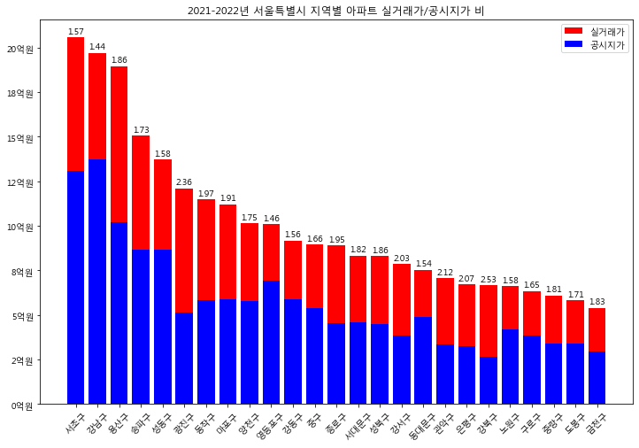

Housing Data Analysis
Here are some charts I've made
Analysis on Seoul


Appraised/Actual Price in Seoul
● 실거래가 2021-2022년도 데이터 포함, 공시지가 2021-2022년 데이터 포함으로 실거래가와 공시지가 격차가 커진 것을 볼 수 있음. ● 막대그래프 위에 적힌 숫자는 실거래가/공시지가 비. 강남3구가 가장 차이가 클 것으로 예상됐으나 해당 데이터 분석으로는 강북구(2.53), 광진구(2.36), 관악구(2.12), 은평구(2.07), 강서구(2.03) 5개 지역이 2배를 넘는 최상위 지역.실거래가/공시지가 비가 작게 나오는 이유로 실거래가의 급격한 하락을 가정. 계속 상승 국면에 있었던 아파트 가격이 2022년 하반기에서부터 하락세로 전환, 이에 따라 급격하게 올라갔던 지역들의 경우 버블이 꺼지면서 가격 하락률이 클 것으로 예상.
{kind=link}
 ● 오른쪽은 2018-2022년 5년 동안 각 구별 가격 변화 그래프
● 강남구(맨 위 파란색 선), 서초구(맨 위 보라색 선), 송파구(가운데 회색 선) 모두 높은 상승률을 보였지만 2022년 들어
하락하지 않음.
● 동작구와 같이 2021년까지 증가하다가 2022년에 하락한 지역 중 실거래가/공시지가 비가 높은 편이었던 지역들이 다수 존재.
● 오른쪽은 2018-2022년 5년 동안 각 구별 가격 변화 그래프
● 강남구(맨 위 파란색 선), 서초구(맨 위 보라색 선), 송파구(가운데 회색 선) 모두 높은 상승률을 보였지만 2022년 들어
하락하지 않음.
● 동작구와 같이 2021년까지 증가하다가 2022년에 하락한 지역 중 실거래가/공시지가 비가 높은 편이었던 지역들이 다수 존재.
 ● 가장 큰 값(강북구 2.53)과 가장 작은 값(강남구 1.44)의 기울기를 비교해봤을 때 해당 가정이 유의미하게 도출할 수 있는
결론이 아님.
● 따라서 해당 구별 비싼 동의 실거래가 데이터 수, 큰 평형수의 데이터 수 등에 차이가 있었는지 확인해봐야 할 것으로 보임.
● 가장 큰 값(강북구 2.53)과 가장 작은 값(강남구 1.44)의 기울기를 비교해봤을 때 해당 가정이 유의미하게 도출할 수 있는
결론이 아님.
● 따라서 해당 구별 비싼 동의 실거래가 데이터 수, 큰 평형수의 데이터 수 등에 차이가 있었는지 확인해봐야 할 것으로 보임.
Conclusion
공시지가 및 실거래가 분석 결과, ...